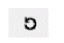

Track Pattern Assistant Filters
There are several ways to filter the WSSPDefs and SPDefs that are shown in the Track Pattern table.

You can collapse or expand the Filter section using the disclosure button. This lets you view more of the WSSPDef state information in the Tracks table.
By default, the Filter section is collapsed.
To reduce the clutter in the table and show only the active patterns, WSSPDefs and SPDefs are hidden by default. To view all the defined WSSPDefs and SPDefs, see Showing and Hiding WSSPDefs and SPDefs.
To show only the WSSPDefs in a related snap pattern group in the table, see Filtering by Related Snap Patterns.
The filters (Snap Def, Pattern, Periods, and Wire Types) are evaluated dynamically to customize the table, in order of precedence from highest to lowest:
- Filtering by Snap Defs
- Filtering by Pattern
- Filtering by Periods
- Filtering by Wire Types
- Filtering by Global Active
- Filtering by Constraints in the Technology File
Using Snap Def, Pattern, Periods, and Wire Types filters affects the WSSPDefs and SPDefs that are shown in the Track Pattern table but does not change the patterns that are displayed in the canvas.
Filtering by Related Snap Patterns
Customers with a large number of width spacing patterns will often create related snap pattern groups to limit different design groups to a smaller set of patterns or active patterns.
To show only the WSSPDefs in a related snap pattern group:
-
Choose the related snap pattern group in the Filter drop-down list.
The Filter drop-down list will show the defined related snap pattern groups and filter settings that are saved in the memory, as described in Saving and Restoring Filter Settings.The Snap Def filter will be cleared. Only WSSPDefs in the selected related snap pattern group will be shown in the table. Any SPDefs in the table are not affected. The patterns in the canvas might also change if any of the current active patterns are not allowed in the related snap pattern. For these cases, the active pattern will be assigned to an allowed pattern in the related snap pattern group.
Filtering by Snap Defs
To show only WSSPDefs and SPDefs matching an expression:
-
Type the expression in the Snap Def field.
As you type, WSSPDefs and SPDefs in the Layer/Def column of the table will dynamically update to include only those matching the expression. Expressions are case-sensitive and can include the special characters shown in Table 3-1.
Table -1 Expression Syntax
Filtering by Pattern
To show only WSSPDefs with allowed WSPs matching an expression:
-
Type the expression in the Pattern field.
As you type, WSSPDefs in the Layer/Def column of the table will dynamically update to include only WSSPDefs with WSPs that match the expression. Expressions are case-sensitive and can include the special characters shown in Table 3-1.
Filtering by Periods
If Show all is selected, the Periods filter list box will show the periods for the enabled and WSSPDefs in the Track Pattern table. Otherwise, only the periods for the enabled WSSPDefs are shown.
To show only WSSPDefs with a specific period:
-
Click the period in the Periods list box.
The period is selected. Only WSSPDefs with a period matching a selected period will be shown in the Track Pattern table. Multiple periods can be selected.
Filtering by Wire Types
If Show all is selected, the Wire Types filter list box will show the wire types for the active patterns of the enabled and WSSPDefs in the Track Pattern table. Otherwise, only the wire types for the active patterns of the enabled WSSPDefs are shown.
To show only WSSPDefs with an active WSP containing a pattern of a specific wire type:
-
Click the wire type in the Wire Types list box.
The wire type is selected. WSSPDefs with an active WSP containing a pattern of a wire type matching a highlighted wire type will be shown in the Track Pattern table. Multiple wire types can be selected.
-
Click the wire type.
The filter is removed for the wire type.Choosing wire types in the Wire Types filter list does not set the wire types for the active pattern. You must set the wire types for the active pattern in the Track Pattern table. For more information, see Specifying the Active Patterns.
Filtering by Global Active
The Global Active filter relates to the SKILL functions, dbSetCellViewActiveWireTypes and dbGetCellViewActiveWireTypes. The cellview active wire types modify what is available in a WSP. This is similar to the way wire types are selected for a specific widthSpacingSnapPatternDefs in the Track Pattern table. The Global Active filter sets the active wire type for all WSSPDefs instead of just a single WSSPDef in the cellview. This is unlike the Wire Types column in the Track Pattern table which displays a single WSSPDef.

Filtering by Constraints in the Technology File
If Show FCG is selected, the Track Pattern table displays track patterns based on the constraints in the technology file. If the WSSPDef is not a member of any allowedSnapPatternDefs, it is always shown. However, if the WSSPDef is a member of any alternate foundry constraint group's allowedSnapPatternDefs, it is only shown in the Track Pattern table when it is a part of the current alternate foundry constraint group’s allowedSnapPatternDefs.
If Show FCG is selected, you can see the Hoff check box. When you select this check box, the Track Pattern table displays WSSPDefs that have a matching WSSPDef_hoff.
t. The cdba.layout AlterenateFoundryCG environment variable sets the value of the current active alternate foundry constraint group. You can update it in the Layout Editor Options form.Clearing Filters
To reset all filters and turn off the visibility of patterns:
-
Click the reset icon
 .
.
All filters are reset, and the WSSPDefs and SPDefs are refreshed accordingly in the Track Pattern table. The visibility for all the patterns is turned off.
-
Shift+click the reset icon .
.
All layers in the Track Pattern table are collapsed or expanded. -
Ctrl+click the reset icon  .
Only the filter settings are reset. -
Ctrl+Alt+Shift+click the reset icon .
.
The defaults are restored and the Track Pattern table is refreshed.
Related Topics
Launching the Track Pattern Assistant
Track Pattern Assistant Toolbar
Saving and Restoring Filter Settings
Return to top